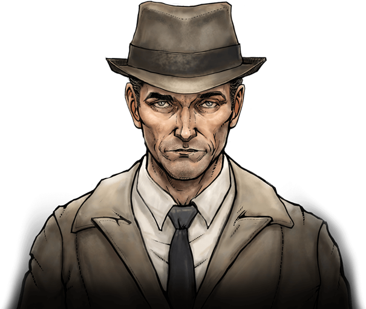
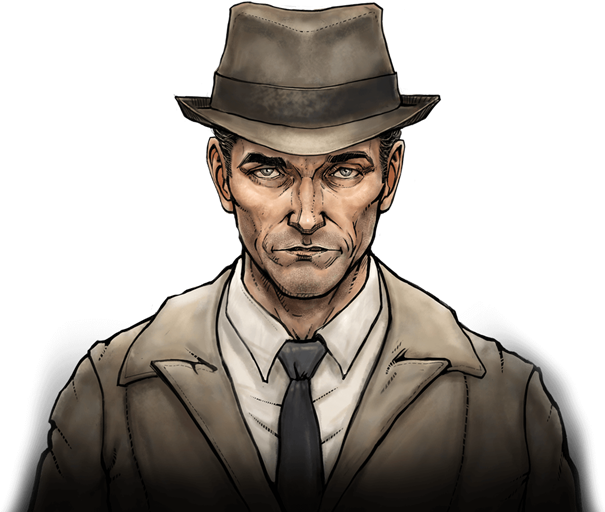

The major and his squad have been called to a bloody crime scene.
When they arrive at the scene, they are greeted by a butcher who has discovered a dead body in his truck among the carcasses of sheep.
While his brigade starts to collect information and to fence off the crime area.
The major decides ....
John: Hello ! I am the commissioner in charge of the investigation.
Are you the person who discovered and reported the body?You have had a road accident.
Logan: Yes, I discovered the body when I was unloading the sheep carcasses that were delivered to me at around 5am.
John: Were there other people with you when you saw the body? Do you recognise the body?
Logan: No, I was alone and I do not recognise this body.
Nora: Hey John! I have discovered several clues. Meet me at the morgue as soon as possible.
John: Hi Nora, what did you find out?
Nora: He is a man between 40 and 50 years old and has been dead for 5-6 days.
The crime was bloody, there are signs of strangulation with a chain and I counted 12 stabs with a large blade.
John: Thank you Nora for all this information,
I will go and question the driver of the truck that delivered the butcher. Bye.
John: Hi, did you deliver the sheep carcasses and a body to Logan s butcher shop this morning?
Lewis: What? Whose body?
John: Yes, there was a dead body between the sheep carcasses you delivered to Logan this morning.
Lewis: When I loaded and unloaded the sheep carcasses from the truck, there were 12 and 0 human bodies.
Nora: I managed to get the fingerprints, and I was able to determine that the dead man was a former drug dealer known to our services as Archibald.
He still has a sister whom you can go and interview.
John: Hi, are you Archibald s sister? I have a few questions for you.
Beth: Yes, but I do not want to answer your questions, you are not welcome here.
John: Stop!!! Your brother is dead. He was murdered.
Beth: What? Was he murdered? How and by whom?
John: These are the questions I came to ask. What do you know? Did he have any enemies?
Beth: No, I am surprised he was murdered and did not die of an overdose.
He had no enemies, he had many satisfied customers.
John: Hi, Don Maclean. What do you have to do with Archibald s murder?
Don Maclean: Sir John, how are you?
I am sorry to disappoint you, but I had nothing to do with Archibald s death.
John: We know you were enemies, so do not make me believe otherwise.
Don Maclean: We each had our own territories, I never had a problem with him.
He was the only one who was correct with all the drug traffickers.
Who do you want to stop?
John: Hi Nora, do you have any new items for me?
Nora: What are you doing here? The suspects will flee.
I would have called you if I had any new information for you.
 
